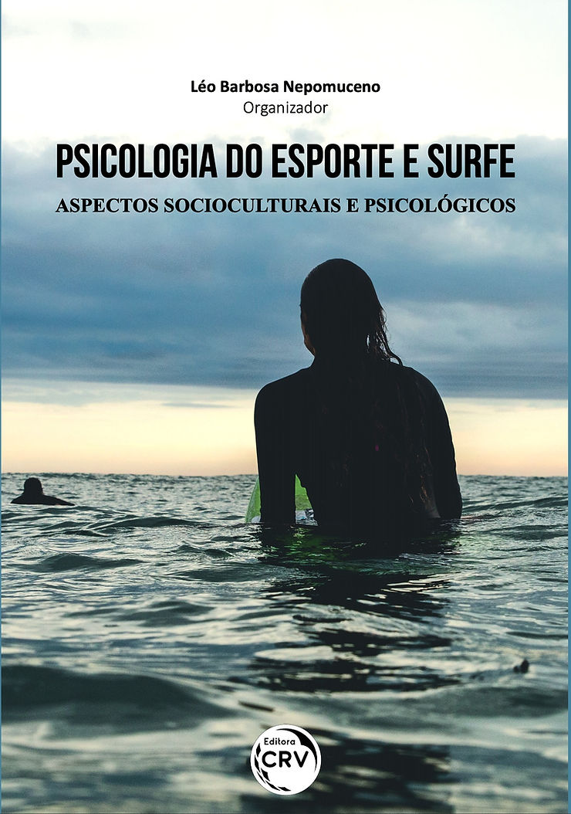
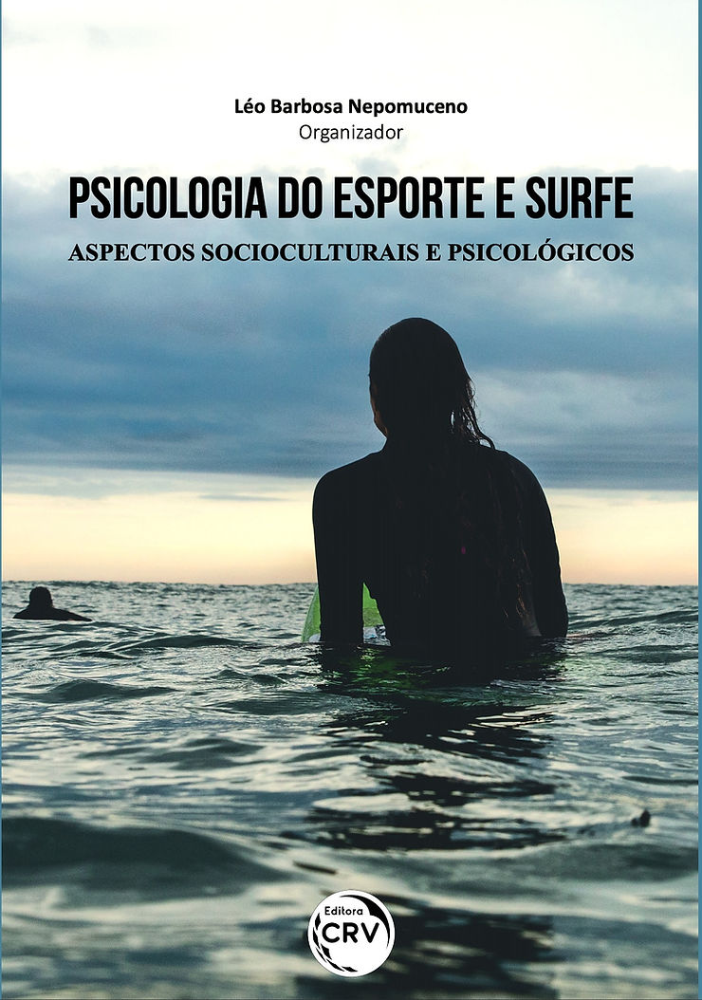

O professor Léo Barbosa Nepomuceno, lança o livro Psicologia do Esporte e Surfe, onde, além de apresentar um estudo qualitativo sobre a relação entre o surfe e saúde, intitulado como EM BUSCA DE EMOÇÃO, EQUILÍBRIO E TRANQUILIDADE, é o organizador da obra.

“Há quatro ou cinco anos, temos feito pesquisas sobre o surfe. Inicialmente formei o grupo de estudos na Universidade Federal do Ceará, mas encontrei várias pessoas, inclusive em evento da ABRAPESP, que já tinham pesquisas e também poderiam contribuir para o livro˜
“O livro representa uma contribuição importante para o campo científico da Psicologia (Social) do Esporte e áreas afins, tendo como objeto de reflexão o surfe como uma prática corporal e esportiva”
“São onze capítulos e vinte autoras e autores de diversos estados brasileiros, filiados a variados grupos de pesquisa, com enfoques e abordagens teóricas diferentes. Tais parcerias foram forjadas no Grupo de Trabalho de Psicologia do Esporte da Associação Nacional de Pesquisa e Pós-graduação em Psicologia (ANPEPP) e fomentadas nos recentes Congressos da Associação Brasileira de Psicologia do Esporte (ABRAPESP), no triênio de 2017-2020” Conclui Léo
Para saber mais sobre esta experiência fomos conversar com alguns dos autores:
Gabriela Carreiro, você e a Marina Penteado Gusson escreveram sobre A PSICOLOGIA NO SURFE ADAPTADO, o que significa o livro e o tema para você?
“O livro é completo. Temos dados técnicos, históricos, quantitativos, que mostram o surfe de uma maneira muito fidedigna e com contribuições científicas. Minha contribuição particular é o surfe adaptado, que já vem despontando faz tempo. Contar a história deste início, ver sua evolução e comparar com o estágio atual. Eu surfo, e passei mais de 10 anos trabalhando neste segmento”.
A imagem de corpos sarados, bronzeados mereceram capítulo, fala Vinícius:
“Fiquei muito feliz com o convite para compor o corpo de autores do livro. A obra conta com excelentes profissionais que somaram forças para falar de surfe e suas múltiplas dimensões”
Poder contribuir com um capítulo que trata sobre a exploração da imagem do surfista e o fenômeno das selfies/redes sociais me deixou muito motivado pois me parece ser um tema atual e importante de ser observado” disse Vinicius Cardoso de Souza , que junto com Rafael Campos Veloso escreveram: NARCISO SOBRE ONDAS: reflexões sobre a autoimagem e a democratização imagética no surfe
“Minha motivação foi juntar a paixão pelo surfe, enquanto um praticante de tempo livre, com os conhecimentos da psicologia do esporte, que é uma área que trabalho há alguns anos. Poder participar da organização do livro, inédito no Brasil, e imagino também que em outros países, é dizer que o surfe pode ser analisado com outra amplitude de percepção, o que contribui, bastante, para a ciência e para a modalidade esportiva. O momento é providencial, principalmente com o surfe entrando nos Jogos Olímpicos”, diz Marina Simons Barbosa de Oliveira
Ela, Júlia Frias Amato e Anna Beatriz Vargas Panfili, escreveram sobre MULHERES AO MAR: o fenômeno dos coletivos femininos de surfe. Que nasceu do aumento de coletivos femininos.
Daí veio a pergunta: o que é este coletivo?
“São grupos de mulheres, que muitas vezes se conhecem pela internet, e acabam combinando bate-e-volta para sessões de surfe, ou, viagens mais longas ou até internacionais, para surfar, É um movimento que trás uma certa segurança, porque tem mais mulheres na água, não ficam sozinhas, mas em grupo”
Por que?
“Quando as mulheres sozinhas, têm um pouco mais de resistência dos surfistas homens. A ideia do coletivo, foi empoderar as mulheres, de alguma forma, para conseguissem ocupar espaço no mar e poderem surfar sem preocupação.””
OS EFEITOS TERAPÊUTICOS DO SURFE NA SAÚDE MENTAL foram abordados no artigo de Erick Francisco Quintas Conde e Raquel Nogueira da Cruz
“Nosso capítulo trata sobre os efeitos terapêuticos associados ao surfe. Ele é um produto decorrente de um estudo aprofundado, resultante, inclusive, de uma revisão sistemática sobre os estudos que tenham investigado aspectos psicológicos neste universo do surfe. A partir daí identificamos que existem protocolos denominados de surfe terapia capazes de influenciar, significativamente, nos indicadores de saúde mental. “
Tiago Brant de Carvalho Falcão, apresenta um estudo sobre surfe, ESTILO DE VIDA E DEPRESSÃO: a opinião de Kelly Slater.
“Coloquei um pouco da história do surfe e a perspectiva do Kelly Slater, que é o maior campeão do esporte, sobre depressão e suicídio. Algo que acontece no surfe, como em todas as esferas da sociedade. O mal do século.”
O livro tem 20 autores, sendo que 14 ou 15 deles são surfistas, ou como diria Tiago Brant “o esporte dos reis”, dos reis havaianos. E uma curiosidade, têm duas correntes sobre o nascimento do surfe, uma que nasceu na Polinésia, Havaí… e outra no Peru.
“Na verdade, as terras dos povos do Peru e Polinésia são banhadas pelo oceano Pacífico. Eram ligados ao mar, navegadores, enfim podem até ter ancestrais em comum. ” Completa Tiago.
E falando em onda… TÁ DANDO ONDA? UMA SUSPEITA SOBRE O IMAGINÁRIO GOOD VIBES DO SURFE, é o tema do Fidel Machado de Castro Silva, também surfista que explica:
“Imaginário good vibes é um comportamento bastante recorrente no surfe, que lê a realidade de maneira estritamente positiva, “tá tudo bem”, “tá tudo bom”.
“Quanto ao livro, certamente se apresenta no cenário nacional como uma imprescindível contribuição para os pesquisadores, estudiosos e entusiastas do surfe. Os capítulos tensionam múltiplas facetas e apresentam um panorama prolífico para ampliar e enriquecer o debate na área.”
“Busquei tematizar e refletir sobre o surfe a partir do entrecruzamento, proposto por Angela Davis, de gênero raça, classe e tensionar o ideário good vibes bastante hegemônico no surfe”.
Questões educativas e sociais também foram abordadas, no capítulo SURFANDO COM AS JUVENTUDES: significados e sentidos do surfe para os jovens, de Liana Lima Rocha e Maria Eleni Henrique da Silva .
“O capítulo é uma parte da pesquisa etnográfica que realizei durante o mestrado no programa de Pós-graduação de Educação Brasileira na Universidade Federal do Ceará. O objeto de estudo foi o surfe como prática pedagógica libertadora com outras duas categorias – juventude e educação.”
“Passei um ano realizando essa pesquisa etnográfica numa comunidade em vulnerabilidade social, em Fortaleza. Um dos resultados foi a importância do surfe na vida dos jovens, principalmente diante de um contexto tão triste de violência, fome e desigualdade social. É baseada na perspectiva de educação libertadora de Paulo Freire”.
“Meu campo é dos movimentos sociais, minha análise é fundamentada na visão de um surfe que eu chamo de libertador. É Inclusão. Emancipação. Formação crítica para e pelo o surfe. Progressista”
E entre tantos estudiosos-surfistas. também conversamos com Mariana Vannuchi Tomazini, que se declara apaixonada pelo esporte, mas que não surfa, e que junto com Luci Leal Melo-Silva apresenta as NARRATIVAS DE SURFISTAS PROFISSIONAIS: construção da identidade e da carreira.
O trabalho da dupla é baseado em depoimentos de profissionais, e sem a experiência na prancha, Marina fala da sua admiração pela modalidade que faz desejar morar na praia, surfar e continuar sua pesquisa que começou no mestrado na USP.
Baixe aqui a versão digital do livro